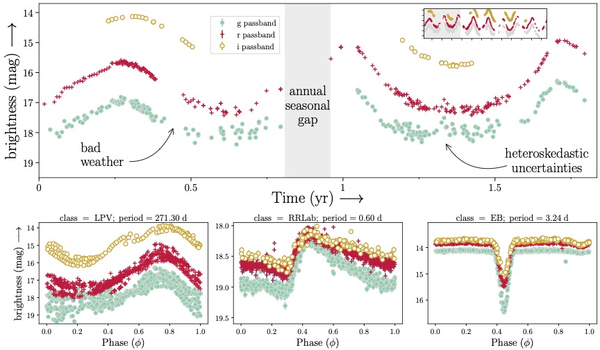

Dataset & Statistics
The benchmark dataset includes multi-variate time-series observations of periodic variable stars. The flux is presented in magnitudes (an astronomy specific unit), while the time is recorded as the modified Julian date. The observations are from the Zwicky Transient Facility (ZTF), which repeatedly scans all stars visible from the Northern hemisphere every few days. ZTF observes in three different passbands, g, r and i roughly corresponding to visible green, visible red, and (outside the visible) infrared light, respectively. We use observations from ZTF data release 23 (DR23) which spans a duration of ~6.5 yr and contains billions of light curves. While many labels for periodic variable stars exist within the literature, the vast majority of these labels are derived from low-capacity machine learning models. A careful selection of light curves is therefore warranted to prevent significant label noise within the benchmark. We thus avoid these catalogs in establishing this benchmark.
| Class | EW | EA | RRab | RRc | RRd | RS CVn | LPV |
|---|---|---|---|---|---|---|---|
| Train | 18,998 | 2,889 | 1,386 | 3,233 | 1,686 | 2,912 | 6,343 |
| Val | 2,375 | 361 | 173 | 404 | 211 | 364 | 793 |
| Test | 2,375 | 361 | 173 | 404 | 211 | 364 | 793 |
| Total | 23,748 | 3,611 | 1,732 | 4,041 | 2,108 | 3,640 | 7,929 |
Challenges
Astronomical time series present several unique challenges that distinguish them from typical time series data. In general, these light curves are noisy, irregularly sampled, and have heteroskedastic uncertainties. Therefore, this dataset presents unique challenges for time series foundation models that machine learning communities seldom encounter.

- Irregular Sampling: Observations are taken at irregular intervals due to weather conditions, telescope scheduling, and seasonal visibility.
- Noise and Outliers: Atmospheric conditions, instrumental effects, and cosmic rays can introduce significant noise and outliers.
- Multi-band Observations: Data is collected in multiple photometric bands (g, r, i) with different noise characteristics.
- Long Timescales: Observations span years, requiring models to capture both short-term variability and long-term trends.
- Class Imbalance: Some variable star types are much more common than others, creating imbalanced datasets.